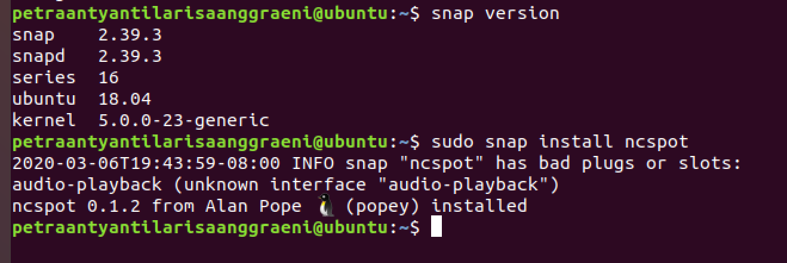
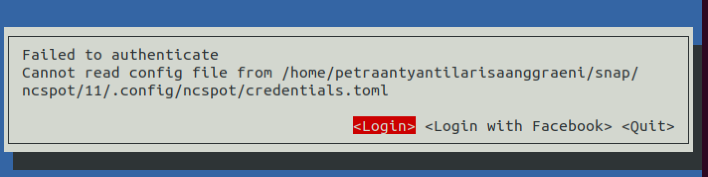
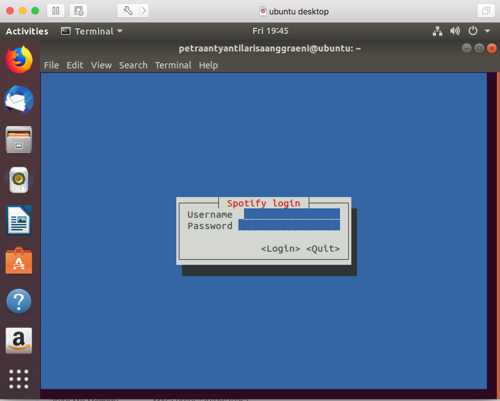

March, 06 2020
Spotify from CLI
Spotify is a music streaming provider that has been used by over 180 million active listeners. Normally Spotify users can stream their favorite songs by accessing their apps. They have the desktop and also mobile apps supporting various Operating Systems including IOS, Android, MacOS, Windows.
Why ditch the neat user friendly GUI then?
There's no doubt that using spotify through the command line is definitely a lot more complex than just launching the application you have already installed on your device. However, it does not mean that there's no benefit to it.
Alternatively from using spotify app, you can use ncspot. Using ncspot can provide resource efficiency. Just to compare, the regular Spotify app takes about 1000MiB in total (407.3MiB for private memory and 592.7MiB for shared memory). Meanwhile, ncspot will only take about 46.2MiB of resourcer in total (22.1MiB private memory and 24.1 MiB shared memory)! That means you save more than 20 times less resources! Not only that, ncspot is very easy to install in any linux distro. In here I will show you how to install it on Ubuntu
ncspot on Ubuntu
Firstly, befor you start installing ncspot, you will need to make sure that you have snap installed. For recent ubuntu version, it already has snap installed (I'm using ubuntu 18.04). To check if snap is installed, run command below
snap version
And then you'd want to install ncspot using the command below
sudo snap install ncspot
For reference, see picture below

Once you're done with your installation, open a new terminal window and run ncspot. To run ncspot, you will just have to run ncspot. For your first time using ncspot, you might receive an error message regarding your credential as you can see on the picture below.

In this case, just click login and you will be prompted to enter your spotify account information as shown below.

Once logged in, you can start streaming your favorite songs! :)
References from: https://www.omgubuntu.co.uk/2020/02/spotify-cli-client-ncspot